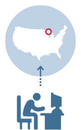
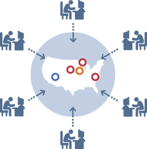
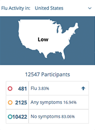

<aside role="tabpanel" class="about-tabs" ng-init="tab=1">

  <!-- Nav tabs -->
  <ul class="nav-tabs" role="tablist">
    <li ng-class="{'active': tab==1}">
      <a ng-click="tab=1" title="How it works">How it works</a>
    </li>

    <li ng-class="{'active': tab==2}">
      <a ng-click="tab=2" title="Who we are">Who we are</a>
    </li>
  </ul>

  <!-- Tab panes -->
  <div class="tab-panes">
    <aside id="how-it-works" ng-show="tab==1" class="tab-content">
      <p class="description">
        Thousands of individuals submit weekly health reports to benefit their
        community. It’s the power of the crowd!
      </p>

      <div class="complementary">
        <h4 class="did-you-know">Did you know?</h4>

        <ul>
          <li>
            CDC estimates of flu-associated yearly deaths in the United States
            range from a low of about 3,000 to a high of about 49,000 people.
          </li>

          <li>
            If you have the flu, you can infect others 1 day before showing
            symptoms and up to 7 days after becoming sick.
          </li>

          <li>
            The single best way to prevent the flu is to get a flu vaccine
            each season.
          </li>
        </ul>
      </div>

      <div class="complementary">
        <aside class="about-image">
          <figure>
            
            <figcaption>Take just a few seconds to report how you’ve been feeling. It’s free and anonymous</figcaption>
          </figure>
        </aside>

        <aside class="about-image">
          <figure>
            
            <figcaption>Thousands of reporters across the country also contribute weekly</figcaption>
          </figure>
        </aside>

        <aside class="about-image">
          <figure>
            
            <figcaption>Reports are collected and mapped so that you know when the flu is around</figcaption>
          </figure>
        </aside>
      </div>
    </aside>

    <aside id="who-we-are" ng-show="tab==2" class="tab-content who-we-are">
      <h4 class="title-secondary">Early detection and early response are key to preventing the spread of any disease.</h4>

      <h5 class="subtitle-primary">Makes sense, but how do you detect disease outbreaks in real time?</h5>

      <div class="complementary">
        <p class="description">
          While important systems exist for reporting and tracking disease,
          they’re not perfect, missing those who don’t go to the doctor, and a
          bit slowly because it takes time for reports to be collected and sent
          to health departments.
        </p>

        <p class="description">
          We believe that letting individuals report symptoms in real-time can
          complement traditional tracking while providing useful information
          directly to the public.
        </p>
      </div>

      <div class="complementary images">
        <figure class="healthmap">
          
        </figure>

        <figure class="skoll">
          
        </figure>

        <figure class="boston">
          
        </figure>
      </div>

      <p>
        Created by epidemiologists at Harvard, Boston Children’s Hospital and
        The Skoll Global Threats Fund, Flu Near You relies on voluntary
        participation from the general public, asking you to take a few
        seconds each week to report if you or your family members have been
        healthy or sick.
      </p>

      <p>
        We analyze thousands of reports and map them to generate local and
        national views of influenza-like illness, providing public health
        officials and researchers with real-time, anonymous information that
        could help prevent the next pandemic.
      </p>

      <p>
        With your help, we can all see what’s coming and - better still- you
        have the knowledge to protect yourself and your family against disease.
      </p>
    </aside>
  </div>

</aside>
